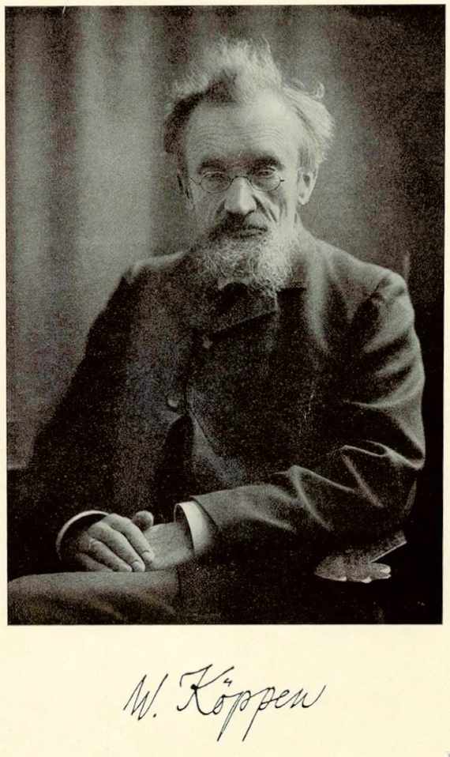
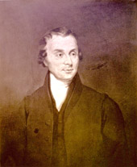
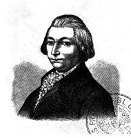

Muž, který jako první dokázal, že vzduch má váhu — a vynalezl barometr.
Torricelli byl italský fyzik a matematik, žák slavného Galilea Galileiho. V roce 1643 provedl slavný pokus:
naplnil skleněnou trubici rtutí, obrátil ji dnem vzhůru do misky s rtutí — a všiml si, že rtuť v trubici
klesla jen po určitou úroveň a zůstala viset ve vzduchoprázdném prostoru nad ní.
Tím dokázal něco, čemu tehdy skoro nikdo nevěřil: že vzduch kolem nás má váhu a tlačí na všechno kolem nás
(atmosférický tlak). Prostor nad hladinou rtuti byl jedním z prvních uměle vytvořených vakuí v historii —
říká se mu dodnes Torricelliho vakuum.
Jeho přístroj byl vůbec první barometr na světě. Jednotka tlaku "torr" (používaná dodnes ve fyzice)
je pojmenovaná právě po něm.
Souvislost s vaší dílnou: Barometr z lahve, který jste si postavili v úterý, funguje na úplně
stejném principu jako Torricelliho přístroj — jen místo rtuti používá vodu a vzduch. Když sledujete, jak
voda uvnitř stoupá a klesá, sledujete přesně to, co Torricelli objevil před více než 380 lety.

Wladimir Köppen
1846 – 1940, Rusko / Německo
Vytvořil mapu podnebí celého světa — systém, který se používá dodnes.
Köppen byl rusko-německý meteorolog, klimatolog a botanik. Všiml si, že rozložení rostlin na Zemi úzce
souvisí s tím, jaké má dané místo podnebí — kolik tam prší a jak je tam v průměru teplo či zima během roku.
Na základě toho v roce 1884 vytvořil Köppenovu klasifikaci podnebí — systém písmenných kódů, který
rozděluje celý svět do několika hlavních pásem:
Kód
Pásmo
Popis
Příklad země
Příklad kódu
A
Tropické
Teplo celý rok (přes 18 °C i v nejchladnějším měsíci), žádná pravá zima, velké množství srážek —
deštné pralesy.
Brazílie, Indonésie
Af tropický deštný prales
B
Suché
Velmi málo srážek, výpar převažuje nad deštěm — pouště a stepi. Velké rozdíly teplot mezi dnem
a nocí.
Maroko, Saúdská Arábie
BSh Marrákeš — horká polosuchá step
C
Mírné
Čtyři výrazná roční období, mírné zimy (nad −3 °C v průměru), dostatek srážek po celý rok.
Česko, Francie
Cfb Praha — vlhko celý rok, teplé léto
D
Kontinentální
Velké rozdíly mezi horkým létem a velmi studenou zimou, typicky ve vnitrozemí daleko od moře.
Rusko, Kanada
Dfb Moskva
E
Polární
Trvale chladno, průměrná teplota ani v nejteplejším měsíci nepřekročí 10 °C. Led a sníh po většinu
roku.
Grónsko, Antarktida
ET tundra
Jak číst kód: první písmeno = hlavní pásmo (A–E). Druhé písmeno obvykle popisuje srážky
(f = vlhko celý rok, S = polosuchá step, W = poušť, T = tundra...). Třetí písmeno u C a D popisuje léto
(b = teplé, a = horké). Např. Cfb = mírné, vlhko celý rok, teplé léto (Praha).
Tento systém dodnes používají meteorologové, geografové i biologové po celém světě, protože jasně ukazuje,
proč na různých místech Země roste jiná příroda a žijí jiná zvířata.
Souvislost s naší nástěnkou: Podívej se na poster "Počasí a podnebí" — Praha má podle Köppenovy
klasifikace kód Cfb (pásmo C — mírné), zatímco Marrákeš má kód BSh (pásmo B — suché).
Jsou to přesně ta písmenka, která Köppen vymyslel.
Beaufortova stupnice
Jak odhadnout sílu větru bez přístroje
Vytvořil ji roku 1805 britský admirál Francis Beaufort pro potřeby námořnictva — a funguje dodnes.
Stupeň
Název
Rychlost
Co uvidíš
0
Bezvětří
0–1 km/h
Kouř stoupá kolmo vzhůru
1
Vánek
1–5 km/h
Kouř se mírně snáší, praporky visí
2
Slabý vítr
6–11 km/h
Cítíš vítr na tváři, listí šelestí
3
Mírný vítr
12–19 km/h
Listí a větvičky se stále hýbou, praporek vlaje
4
Dosti čerstvý vítr
20–28 km/h
Zvedá prach a papír, hýbe větvemi
5
Čerstvý vítr
29–38 km/h
Menší listnaté stromy se komíhají
6
Silný vítr
39–49 km/h
Silné větve se hýbou, deštník se ovládá s obtížemi
7
Prudký vítr
50–61 km/h
Celé stromy se hýbou, jde se proti větru s námahou
8
Bouřlivý vítr
62–74 km/h
Lámou se větve stromů
9
Vichřice
75–88 km/h
Škody na střechách a komínech
10
Silná vichřice
89–102 km/h
Vyvrací stromy, velké škody na budovách
11
Mohutná vichřice
103–117 km/h
Rozsáhlé škody, ojediněle se vyskytuje
12
Orkán
118+ km/h
Ničivé škody, velmi vzácné v ČR
Tip: Zkus si stupeň větru odhadnout venku podle toho, co vidíš — a pak to nauč
aspoň jednoho kamaráda nebo kamarádku. To je přesně to, co odborka vyžaduje.
Když počasí ubližuje
Nebezpečné jevy a jak jim předcházet
⚡ Bouřka
Blesky, prudký déšť, kroupy a nárazový vítr. Blesk může zapálit les nebo vážně ohrozit lidi na
otevřeném prostranství.
Prevence: úkryt uvnitř budovy nebo auta, vyhýbat se osamělým stromům a otevřeným plochám,
sledovat předpověď před výpravou.
🌊 Povodeň
Dlouhotrvající déšť nebo rychlé tání sněhu — řeky se vylijí z břehů a zaplaví vše kolem.
Prevence: nestavět tábor u břehu řeky, znát únikové cesty, sledovat povodňové výstrahy
(např. ČHMÚ).
🧊 Ledovka
Tenká vrstva ledu na silnicích a chodnících, která vzniká, když mrznoucí déšť nebo mlha namrzá na
studený povrch. Extrémně kluzká a často špatně viditelná.
Prevence: obuv s dobrou přilnavostí, opatrná chůze (kratší kroky, těžiště níž), omezit
zbytečné cesty autem i pěšky, posyp cest solí/pískem, sledovat výstrahy před náledím.
☀️ Sucho
Dlouhé období bez deště vysušuje půdu i lesy, ničí úrodu a zvyšuje riziko požárů.
Světlo ze Slunce vypadá bíle, ale ve skutečnosti obsahuje všechny barvy duhy zároveň.
Proč je obloha modrá? Sluneční světlo cestuje atmosférou a naráží na drobné
molekuly vzduchu. Modré světlo má krátkou vlnovou délku a rozptyluje se na těchto molekulách mnohem víc než
červené nebo žluté — tenhle jev se nazývá Rayleighův rozptyl. Modré světlo se tak rozptýlí po celé obloze
a přichází k nám ze všech směrů, proto vidíme oblohu modrou.
Jak vzniká duha? Když sluneční paprsky projdou kapkou vody (např. po dešti),
ohnou se (lom světla) a uvnitř kapky se odrazí. Různé barvy světla se ale ohýbají mírně jinak, takže se
od sebe oddělí — a k nám dorazí jako pásmo barev od červené po fialovou.
Bonus — halo: Kroužek nebo sloup světla kolem Slunce či Měsíce, který vzniká
lomem světla na drobných ledových krystalcích ve vysokých mracích (cirrostratus). Halo bývá znamením,
že se blíží změna počasí.
Počasí, nebo podnebí?
Dva pojmy, které se často pletou
🌦️ Počasí
Aktuální stav atmosféry na daném místě — teď, dnes, nebo tento týden.
Mění se z hodiny na hodinu i ze dne na den: prší, je zataženo, fouká vítr, svítí slunce.
Zjišťuješ ho pohledem z okna, na barometru, nebo v předpovědi na zítřek.
Příklad: "Dnes v Praze prší a je 14 °C."
🌍 Podnebí (klima)
Dlouhodobý průměr počasí na daném místě, spočítaný z mnoha let (typicky 30 let) pozorování.
Nemění se ze dne na den — popisuje, co je pro dané místo typické: jak teplá bývají léta, jak
studené zimy, kolik tam v průměru za rok naprší.
Zjišťuješ ho ze statistik, map podnebí (např. Köppenova klasifikace) nebo dlouhodobých záznamů.
Příklad: "V Praze bývá mírné podnebí se čtyřmi ročními obdobími."
Zkráceně: podnebí je to, co očekáváš. Počasí je to, co dostaneš.
Praha, ČR
Marrákeš, Maroko
Köppenova klasifikace
Cfb — mírné, vlhké
BSh — horké polosuché
Typické podnebí
čtyři výrazná roční období
horká suchá léta, mírné zimy
Průměrná roční teplota
orientačně ~10 °C
orientačně ~19 °C
Průměrné roční srážky
orientačně ~500 mm
orientačně ~250 mm
Roční hodnoty jsou orientační. Chceš vědět, jaké je tam počasí zrovna TEĎ? To už
musíš zjistit sám — podnebí ti řekne, co je typické, ale ne co se děje právě dnes.
KARTIČKY PRO DĚTI — tisk oboustranně (přední / zadní)
DOKAŽ TO — 2: Druhy oblaků
10 druhů oblaků
Jméno: ______________________ Zakresli si k obrázkům, jaký typ jsi dnes viděl na obloze.
Vysoké (5–13 km)Střední (2–7 km)Nízké (0–2 km)Vertikální (0–13 km)
Cirrus (Ci)
Tenké, vláknité, "peříčkové" mraky vysoko na obloze. Bývá jasno.
5–13 km
Cirrocumulus (Cc)
Drobné bílé chuchvalce do vlnek — "rybí šupiny" na obloze.
5–13 km
Cirrostratus (Cs)
Tenký bílý závoj přes celou oblohu, kolem Slunce/Měsíce bývá kruh (halo).
5–13 km
Altocumulus (Ac)
Bílé nebo šedé chuchvalce ve skupinách, jako ovčí vlna.
2–7 km
Altostratus (As)
Šedý nebo namodralý souvislý závoj, Slunce skrz něj vidíš jen jako mlhavý kotouč.
2–7 km
Nimbostratus (Ns)
Tmavě šedá souvislá vrstva, ze které trvale a vytrvale prší nebo sněží.
0–4 km
Stratocumulus (Sc)
Šedé nebo bílé hrudkovité mraky uspořádané do řad či skupin, nízko nad zemí.
0–2 km
Stratus (St)
Jednolitá šedá vrstva nízko nad zemí — vlastně jako mlha, co se nedotýká země.
0–2 km
Cumulus (Cu)
Bílé "kupovité" mraky s plochým dnem — klasické mraky z obrázků, hezké počasí.
Bonus: otoč kartičku — dozvíš se, kdo tyhle mraky vůbec pojmenoval.

Luke Howard
1772 – 1864, Anglie · "Namer of Clouds"
Muž, který dal mrakům jména.
Luke Howard se narodil roku 1772 v Londýně do kvakerské rodiny. Vyučil se lékárníkem a celý život si
vydělával jako chemik — meteorologie byla "jen" jeho celoživotním koníčkem. Od mládí ho fascinovala
obloha a od roku 1806 si přes 30 let vedl vlastní podrobný "meteorologický deník" — každý den
zapisoval teplotu, tlak i to, jaké bylo počasí. Přesně to samé, co teď zkoušíte vy ve svém týdenním
deníku, dělal on roky a roky.
V prosinci 1802, jako mladík, přednesl v londýnském vědeckém klubu přednášku nazvanou
„O proměnách oblaků". Navrhl v ní rozdělit mraky do skupin podle tvaru a výšky a pojmenovat je
latinsky — cirrus (vlas/kadeř), cumulus (hromada), stratus (vrstva) a
nimbus (déšť) — a jejich vzájemné kombinace. Do té doby si lidé mysleli, že mraky jsou příliš
chaotické na to, aby se daly nějak systematicky pojmenovat.
Jeho systém se během pár let rozšířil po celé Evropě a obdivovali ho i slavní básníci a malíři jeho
doby (např. Goethe nebo malíř Turner). Howard díky svým dlouhodobým záznamům počasí v Londýně také
jako první popsal, že velké město je teplejší než okolní krajina — jev, kterému se dnes říká
tepelný ostrov. Za svou práci byl v roce 1821 zvolen členem prestižní Královské společnosti
v Londýně. Dodnes se mu přezdívá „Namer of Clouds" — ten, kdo pojmenoval mraky.
Souvislost s kartičkou na druhé straně: Všech 10 druhů mraků, které jsi právě poznával, nese
jména, která vymyslel přesně tento muž — a jeho nápad vydržet roky zapisovat počasí je přesně to,
co teď zkoušíš i ty ve svém deníku.
DOKAŽ TO — A: Meteorologické veličiny
Meteorologický deník
Skupina / družina: ______________________ Jméno: ______________________
Měř teplotu a tlak vzduchu na naší meteorologické stanici třikrát denně: v 7:00, 14:00
a 21:00. Zapisuj i srážky (kolik mm napršelo od posledního měření) a jaké bylo počasí. Deník si
veď od úterý do neděle.
Datum
Čas
Teplota (°C)
Tlak (stoupá/klesá/stálý)
Srážky (mm)
Počasí a poznámka
Út
7:00
14:00
21:00
St
7:00
14:00
21:00
Čt
7:00
14:00
21:00
Pá
7:00
14:00
21:00
So
7:00
14:00
21:00
Ne
7:00
14:00
21:00
V neděli společně porovnáme dva různé dny — vyber si je předem podle toho, kdy
bylo nejvíc odlišné počasí. Bonus: otoč kartičku a zjisti, kdo tenhle způsob měření (7-14-21) vlastně
vymyslel — a jak dlouho už se takhle měří v Praze.

Antonín Strnad
1746 – 1799, Čechy · zakladatel české vědecké meteorologie
Muž, po kterém měříš počasí přesně ve stejné hodiny jako on.
Antonín Strnad se narodil roku 1746 v Náchodě. Jako mladík vstoupil k jezuitům a vzdělával se
v matematice, teologii a astronomii — mimo jiné i v pražském Klementinu jako asistent astronoma
Josefa Steplinga. Když byl jezuitský řád v roce 1773 zrušen, zůstal Strnad v Praze a naplno se
věnoval vědě.
V roce 1775 začal na Klementinské hvězdárně se systematickým měřením počasí — a tahle řada měření
pokračuje nepřetržitě dodnes. Je to nejdelší nepřetržitě měřící meteorologická stanice na světě.
Strnad zavedl měření teploty, tlaku a vlhkosti vzduchu přesně v 7, 14 a 21 hodin — tomuto
způsobu se říká "mannheimský počet" (podle Meteorologické společnosti v německém Mannheimu, jejímž
byl Strnad od roku 1784 členem). Přesně tyhle tři časy měříš teď i ty ve svém deníku.
Strnad se nevěnoval jen počasí — v roce 1781 se stal ředitelem Klementinské hvězdárny, roku 1778
profesorem matematiky a fyzikální geografie, v roce 1792 děkanem a v roce 1795 dokonce rektorem
pražské univerzity. Podílel se také na opravě Staroměstského orloje v roce 1787. Je považován za
zakladatele české vědecké meteorologie, agrometeorologie (nauky o počasí ve vztahu k zemědělství)
a fenologie (nauky o tom, jak počasí ovlivňuje probouzení přírody během roku).
Souvislost s tvým deníkem: Časy 7:00, 14:00 a 21:00, kdy měříš teplotu a tlak, jsou přesně ty
samé, které Strnad zavedl v Praze už před 250 lety — a měření na Klementinu podle jeho metody
pokračuje dodnes, nepřetržitě už přes dvě a půl století.